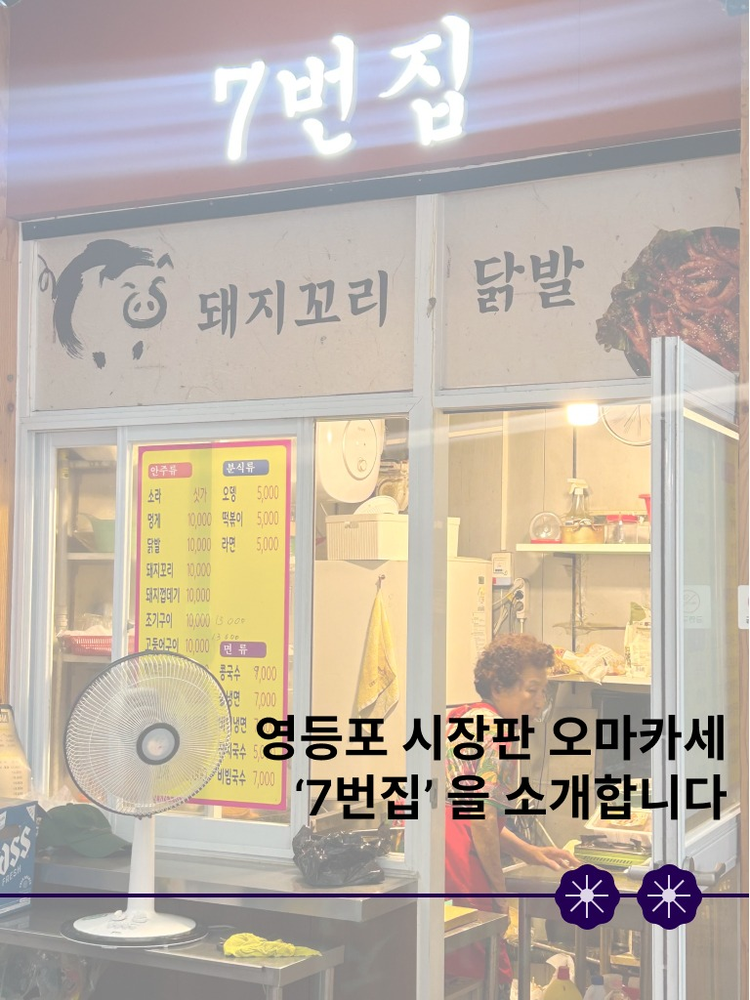
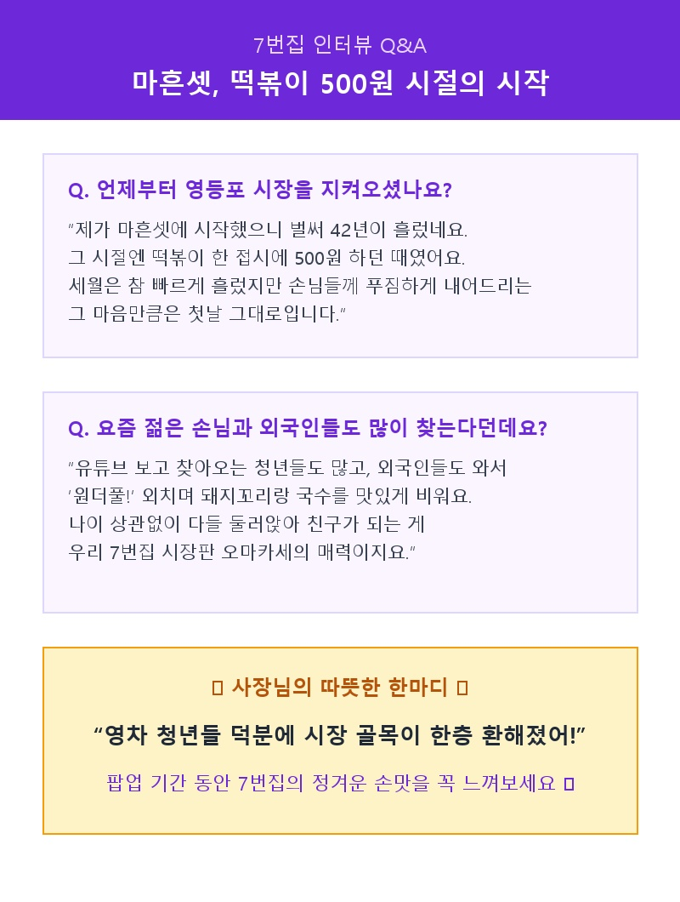
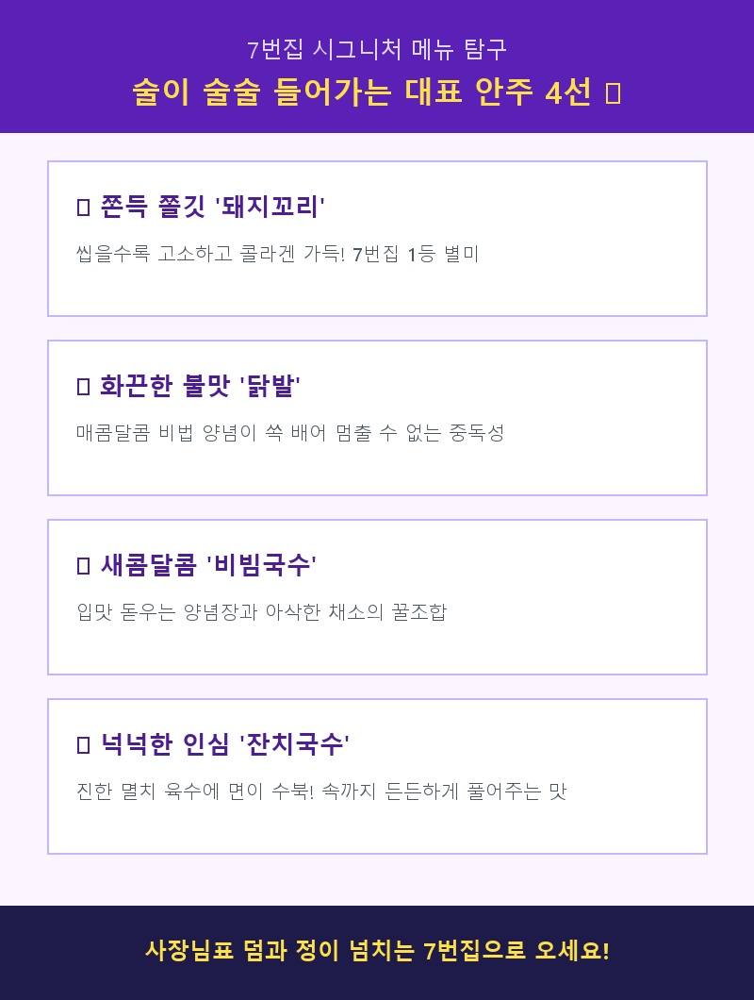
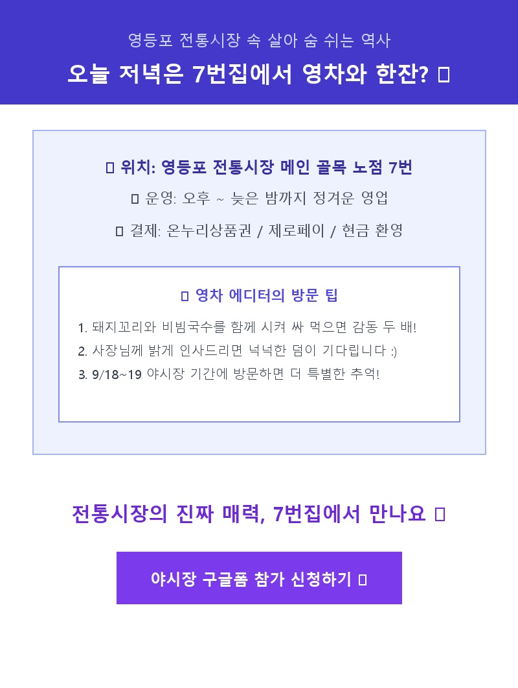

영차 추천 맛집 #01
영등포 시장판 오마카세 [7번집]
“42년의 시간이 쌓인 자리, 편하게 앉아 한잔하고 이야기 나눌 수 있는 곳”
📸 카드뉴스 시리즈 (클릭 시 크게 보기)




🎙️ 영차 X 7번집 사장님 릴레이 인터뷰
Q. 42년 전 영등포 시장에서 어떻게 첫 장사를 시작하셨나요?
“마흔셋 젊은 시절에 이 자리에서 시작했어요. 그땐 떡볶이 한 접시에 500원 하던 시절이었지요. 세월이 흘러 강산이 네 번 바뀌었지만, 갓 만들어 따끈하고 푸짐하게 내어드리는 제 손맛과 정성은 42년 전 첫날과 똑같습니다.”
Q. 최근 2030 청년들과 외국인 손님들도 많이 찾는다고 들었습니다.
“요즘은 유튜브나 SNS 보고 멀리서 찾아오는 젊은 친구들이 참 많아요. 외국인 손님들도 옹기종기 둘러앉아 돼지꼬리랑 잔치국수 한 그릇 뚝딱 비우고 엄지를 치켜세우지요. 나이와 국경 없이 다 같이 편하게 이야기 나누는 게 우리 7번집의 매력입니다.”
✨
7번집 시그니처 추천 메뉴
💡
영차 에디터의 추천 꿀조합
쫀득한 돼지꼬리 구이를 새콤한 비빔국수 면발에 돌돌 말아 한 입 드셔보세요! 사장님의 넉넉한 덤과 함께 술 한 잔 기울이기 최적의 코스입니다.